#1918 Der Gehetzte der Sierra Madre
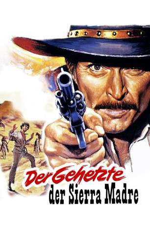 
 IMDB-Wertung: 7.5 / 10
IMDB-Wertung: 7.5 / 10  Metascore: 0
Metascore: 0 
Jonathan Corbett, ein sehr erfolgreicher und bekannter Kopfgeldjäger, wird vom reichen Geschäftsmann Brokston überredet, als Senator zu kandidieren. Bei einer Wahlkampfveranstaltung erfährt Corbett von der Vergewaltigung und Ermordung eines 12-jährigen Mädchens, die der Mexikaner Cuchillo Sanchez begangen haben soll. Corbett wird nun beauftragt, den flüchtigen Mexikaner schnell einzufangen und vor Gericht zu stellen. Der Flüchtige betreibt allerdings ein trickreiches Katz-und-Maus-Spiel mit Corbett, das in den Bergen der Sierra Madre Mexikos in einem abschließenden Showdown sein Ende nimmt. Im Laufe des Films beginnt Corbett, immer mehr an der Schuld Sanchez' zu zweifeln, und stellt sich am Ende sogar auf seine Seite, als er erfährt, dass Brokstons Schwiegersohn Chet Miller das Verbrechen verübt hatte.
Jahr: 1966
Dauer: 80 Minuten
FSK: 12
Land: Italien Studio: Explosive-MediaTonspuren: DD2.0 - ,
Untertitel: Deutsch, Englisch,
Auflösung: 1080p (1920x816) Größe: 7854 MB
Genre: Western
Regisseur: Sergio Sollima
Drehbuch: Franco Solinas, Fernando Morandi, Sergio Donati, Sergio Sollima
Soundtrack: Ennio Morricone
Darsteller:
- 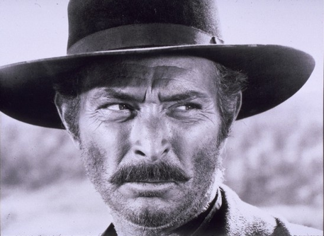 Lee Van Cleef als Jonathan 'Colorado' Corbett
- 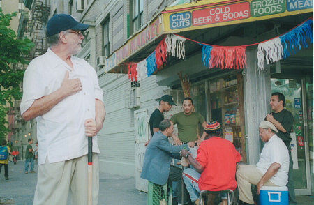 Tomas Milian als Manuel 'Cuchillo' Sanchez
- 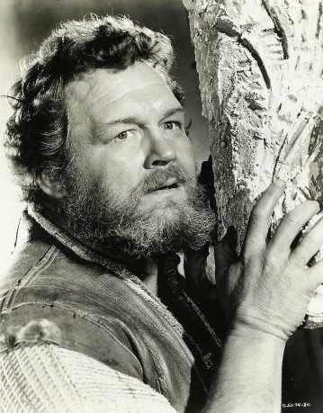 Walter Barnes als Brokston
- Nieves Navarro als The widow
- Gérard Herter als Baron von Schulenberg
- María Granada als Rosita Sanchez
- Roberto Camardiel als Sheriff Jellicol
- 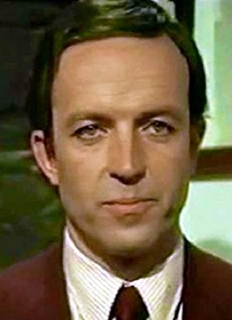 Ángel del Pozo als Chet Miller
- Luisa Rivelli als Willow Creek Prostitute
- Tom Felleghy als Father of Chet Miller
- Calisto Calisti als Mr. Linch
- Benito Stefanelli als Jess, Widow's Ranchero
- 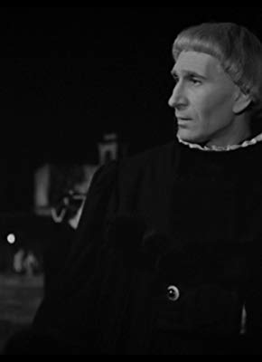 Nello Pazzafini als Ex-Union Outlaw
- 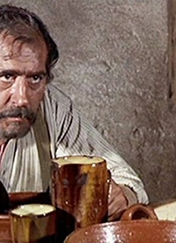 Antonio Casas als Father Smith & Wesson
- José Torres als Paco Molinas
- 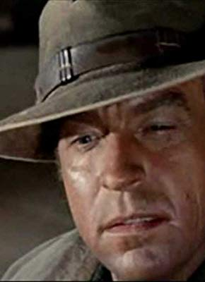 Antonio Molino Rojo als Widow's ranchero
- Spartaco Conversi als Prison Guard Mitchell
- 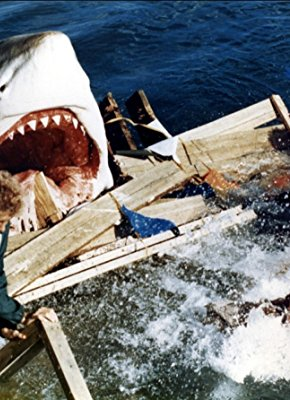 Romano Puppo als Rocky, Widow's Ranchero
- 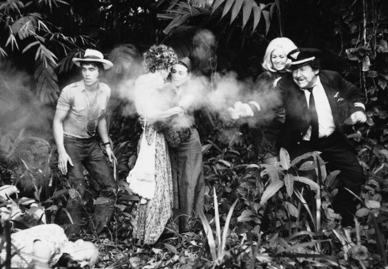 Fernando Sancho als Captain Segura
- 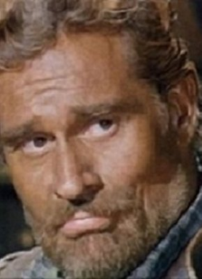 Luis Barboo als Widow's Ranchero , uncredited
- 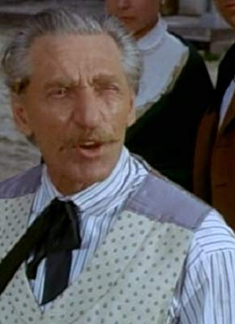 Barta Barri als Nathan Plummer - Old Outlaw , uncredited
- Fernando Bilbao als Widow's Ranchero , uncredited
- Maria Cristina Brancucci als The Balladeer , uncredited
- 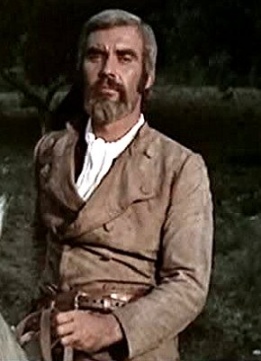 Frank Braña als Widow's ranchero , uncredited
- Pietro Ceccarelli als Jack , uncredited
- Alberico Donadeo als (uncredited
- Raniero Dorascenzi als Wedding Guest Standing Beside Swing , uncredited
- 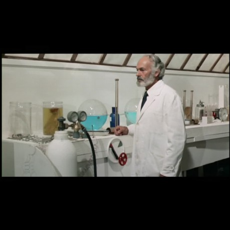 Attilio Dottesio als Mexican Officer , uncredited
- 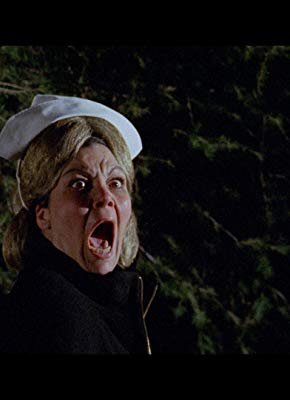 Lina Franchi als Prostitute , uncredited
- José Galera Balazote als Wedding Guest , uncredited
- Luis Gaspar als John O'Leary - Young Outlaw , uncredited
- Christine Heffernan als Woman in Bar , uncredited
- Alba Maiolini als Older prostitute , uncredited
- Maribel Martín als Sarah , uncredited
- Herman Reynoso als Mormon leader , uncredited
- Lorenzo Robledo als Dave - Pioneer , uncredited
- Santiago Santos als Unconfirmed Role , uncredited
- Monica Strebel als Lizzie Miller , uncredited
- Angelo Susani als Mexican Bartender , uncredited
- Fernando Sánchez Polack als Sheriff of Willow Creek City , uncredited
- Giovanni Tarallo als Wedding Photographer , uncredited
- José I. Zaldua als Mexican Barber , uncredited
Datei: X:\HD-Western-1960-1979\Gehetzte der Sierra Madre, Der (1966, FSK12, 1920x816).mkv seit 02.09.2015
Festplatte: HD Eastern+Western
 Es gibt insgesamt 110 Filme in der Gruppe 'HD-Western-1960-1979'
Es gibt insgesamt 110 Filme in der Gruppe 'HD-Western-1960-1979'